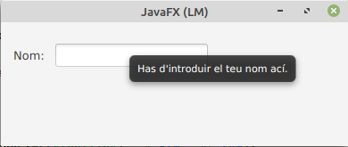

Tooltip s’utilitza per a mostrar informació addicional a l’usuari quan el mouse es troba sobre el component. Tots els components es poden associar amb una informació sobre eines i també es pot associar amb una part de la pantalla.
Constructors de la classe Tooltip:
Mètodes d’ús comú:
per crear un Tooltip sense SceneBuilder:
TextField field_userName= new TextField();
Tooltip tooltip_userName=new Tooltip(“Enter user name”);
// Set tooltip
field_userName.setTooltip(tooltip_userName);
// Or using Tooltip.install
Tooltip.install(field_userName, tooltip_userName);
// Uninstall tooltip
Tooltip.uninstall(field_userName, tooltip_userName);
